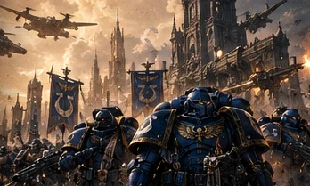

L’HÉRÉSIE D’HORUS
L’Empereur voulait unir l’Humanité. La trahison de son fils Horus allait déchirer la galaxie et condamner son rêve. Explorez huit chapitres pour comprendre cette guerre fondatrice.
L’âge d’or de la Grande Croisade
Le rêve de l’Empereur

À la fin du 30e millénaire, l’Humanité sort d’une longue période de fragmentation. L’Empereur a unifié Terra et cherche désormais à rassembler les colonies humaines éparpillées dans la galaxie. Son projet est immense : reconstruire une civilisation capable de survivre sans dépendre des puissances du Warp.
Pour accomplir cette mission, il dispose des légions de Space Marines, d’armées humaines innombrables et de ses fils génétiquement conçus : les Primarques. Chaque monde retrouvé peut devenir un allié, un bastion industriel ou un nouveau front. Mais cette expansion s’accompagne aussi de conquêtes brutales et de conflits avec ceux qui refusent l’autorité impériale.
La Grande Croisade donne l’impression que rien ne peut arrêter l’Empereur. Pourtant, derrière les victoires, des rivalités entre Primarques, des désaccords idéologiques et des secrets soigneusement gardés fragilisent déjà l’unité de l’Imperium.
Horus, le fils préféré
L’ascension du Maître de Guerre

Horus Lupercal est l’un des premiers Primarques retrouvés par l’Empereur. Chef charismatique et stratège redoutable, il gagne la confiance de ses frères et de nombreuses armées impériales. Sa légion, d’abord connue sous le nom de Luna Wolves, adoptera ensuite celui de Sons of Horus.
Lorsque l’Empereur retourne sur Terra pour poursuivre un projet secret, il nomme Horus Maître de Guerre. Cette distinction fait de lui le commandant suprême de la Grande Croisade. Elle est aussi lourde de conséquences : certains Primarques envient cette promotion, tandis qu’Horus doit maintenir la cohésion de forces qui n’obéissent pas toutes de la même manière.
Son éloignement de l’Empereur et ses inquiétudes sur l’avenir des Primarques deviennent des failles que ses ennemis sauront exploiter. Le destin de la galaxie commence à dépendre des décisions d’un seul homme.
La corruption d’Horus
Le piège de Davin et l’influence du Chaos

La rupture se prépare dans l’ombre. Des manipulateurs liés au Chaos exploitent la confiance d’Horus et les tensions qui traversent la Grande Croisade. Sur Davin, Horus est grièvement blessé par une arme imprégnée de pouvoirs surnaturels.
Pendant qu’il lutte pour survivre, des visions lui montrent un avenir où l’Empereur est vénéré comme un dieu, tandis que les Primarques semblent oubliés. Ces révélations sont orientées pour nourrir sa colère, sa peur et son sentiment de trahison. Horus finit par croire qu’il doit s’opposer à son père.
Sa rébellion n’est pas seulement une question de pouvoir : elle devient un conflit idéologique et familial, alimenté par des forces qui dépassent largement les ambitions humaines. Horus commence alors à rallier d’autres Primarques à sa cause.
Istvaan : la trahison révélée
Deux massacres qui rendent la guerre irréversible

Horus doit d’abord éliminer les guerriers qui refuseraient de le suivre. Sur Istvaan III, plusieurs légions rebelles envoient leurs éléments restés fidèles à l’Empereur sur la planète avant de les attaquer. Malgré leur infériorité, les loyalistes opposent une résistance acharnée.
Peu après, sur Istvaan V, une force de représailles loyaliste tente d’écraser la rébellion. Mais plusieurs légions censées venir en renfort dévoilent leur véritable allégeance et se retournent contre leurs alliés. Le massacre du site d’atterrissage décime les forces loyalistes engagées.
Ces événements montrent que la trahison ne concerne pas une seule légion. L’Imperium découvre l’ampleur d’une conspiration qui a déjà gagné une partie de ses plus puissants défenseurs.
La galaxie en guerre
Calth, Prospero et la Tempête de Ruine

L’Hérésie devient une guerre galactique. À Calth, les Word Bearers frappent les Ultramarines et ouvrent un conflit qui ravage Ultramar. Ailleurs, les Blood Angels affrontent une terrible épreuve dans le système de Signus, tandis que de nombreux mondes changent de camp ou disparaissent dans les combats.
Le destin de Prospero illustre la complexité de cette époque : l’affrontement entre les Thousand Sons et les forces envoyées contre eux précède l’éclatement ouvert de l’Hérésie et contribue à fracturer davantage les légions. Tous les événements ne se déroulent pas dans un ordre simple, et certains drames trouvent leurs racines avant la rébellion d’Horus.
La Tempête de Ruine perturbe les voyages et les communications, isolant de vastes régions impériales. Des commandants loyalistes doivent parfois décider seuls de la marche à suivre, sans savoir si Terra existe encore.
La marche sur Terra
La Guerre solaire et le dernier verrou

Après des années de combats, Horus concentre ses forces pour frapper le cœur politique et symbolique de l’Imperium. Pour atteindre Terra, les renégats doivent traverser les défenses du Système Sol, fortifiées par Rogal Dorn et les loyalistes.
La Guerre solaire met aux prises des flottes gigantesques, des forteresses orbitales et des défenses préparées de longue date. L’enjeu n’est pas seulement de gagner une bataille spatiale : chaque ligne franchie rapproche les forces d’Horus du Palais impérial et réduit le temps dont disposent les défenseurs.
Les loyalistes savent qu’ils ne peuvent compter sur une arrivée rapide de tous leurs alliés. La défense de Terra devient une course contre la montre, tandis que les puissances du Chaos déchaînent leurs forces aux côtés des légions renégates.
Le Siège de Terra
La dernière bataille pour le Palais impérial

Les forces d’Horus atteignent Terra. Le Palais impérial, transformé en une forteresse colossale, est défendu notamment par les Imperial Fists, les Blood Angels, les White Scars et d’innombrables soldats humains. Chaque rempart, chaque porte et chaque ligne de défense devient crucial.
Les combats épuisent progressivement les deux camps. Les Primarques affrontent leurs propres frères, tandis que les manifestations du Warp rendent le conflit de plus en plus étrange et terrifiant. Rogal Dorn organise la résistance, mais même les défenses les plus solides ne peuvent tenir indéfiniment.
La confrontation finale oppose l’Empereur à Horus à bord du Vengeful Spirit. Horus est vaincu, mais l’Empereur subit des blessures si graves qu’il doit être installé sur le Trône d’Or. La victoire impériale laisse un empire profondément transformé.
Les conséquences de l’Hérésie
La fin d’un rêve et le début de la Longue Guerre

La mort d’Horus ne met pas fin à toutes les guerres. Les forces renégates se replient, tandis que les loyalistes entreprennent la Grande Purge pour reconquérir les territoires perdus. Les légions traîtresses deviennent les ennemies héréditaires de l’Imperium et poursuivent leur lutte pendant les millénaires suivants.
Du côté loyaliste, les grandes légions de Space Marines sont progressivement divisées en chapitres selon les réformes associées au Codex Astartes. L’Empereur, autrefois opposé à son propre culte, devient peu à peu l’objet d’une vénération religieuse qui façonne l’ensemble de la société impériale.
Dix mille ans plus tard, les conséquences de l’Hérésie sont partout : dans les institutions, dans les peurs de l’Imperium et dans la haine qui oppose Space Marines loyalistes et renégats. Pour comprendre Warhammer 40K, il faut comprendre cette rupture fondatrice.
Illustrations issues des archives existantes de Chroniques des Mondes ; elles sont provisoires et pourront être remplacées par des scènes dédiées à l’Hérésie.
← RETOUR À WARHAMMER 40K